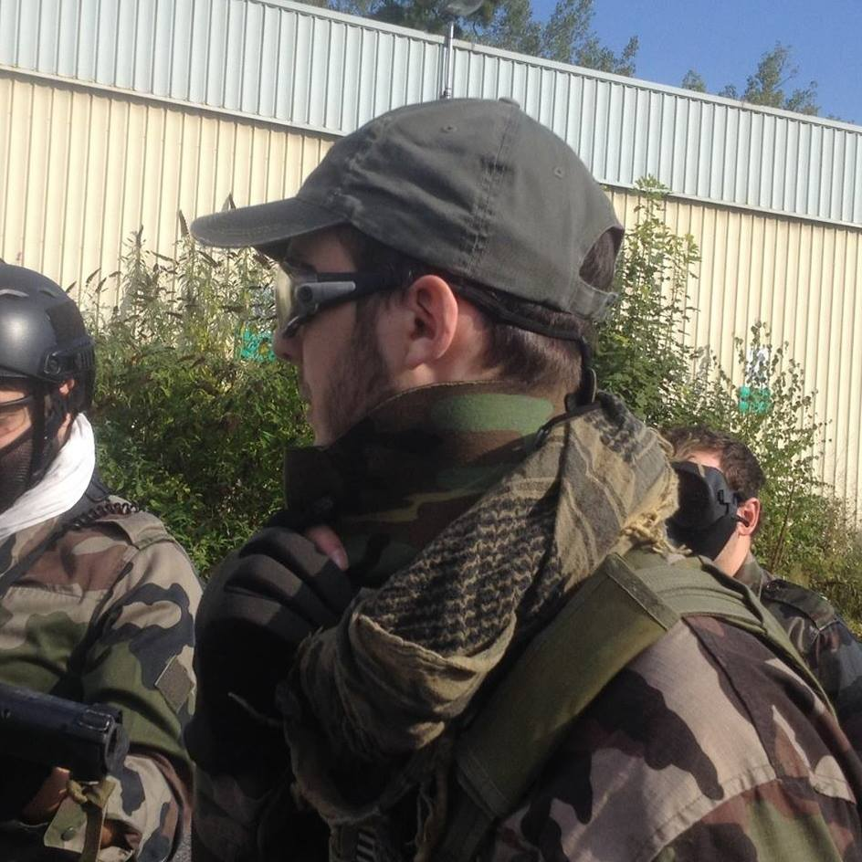

|  |
Wallerand DelevacqWallerand DELEVACQ12 allée des troufions, 46800 Montcuq Tel: +33 6 12 34 56 78 plop@plop.plop |
J'avais des boots blanches,
Un gros ceinturon,
Une chemise ouverte
Sur un médaillon.
C'était mon sourire
Mon atout majeur.
Je m'éclatais comme une bête
Quand j'étais chanteur.
Des rôles pénétrants, Cinepress
Comment est-ce qu'on appelle un boomerang qui ne revient pas ? Réponse : Un chat mort !
| Faible | Moyen | Fort |
|---|---|---|
| Rockn'Roller | Tigre et Dragon | Super G |
| Le tdiangle torride | Le bateau ivre | Le cadenas |
| Au pied du mur | Totem et tabou | La bombe à retardement |
| C'est si bon |